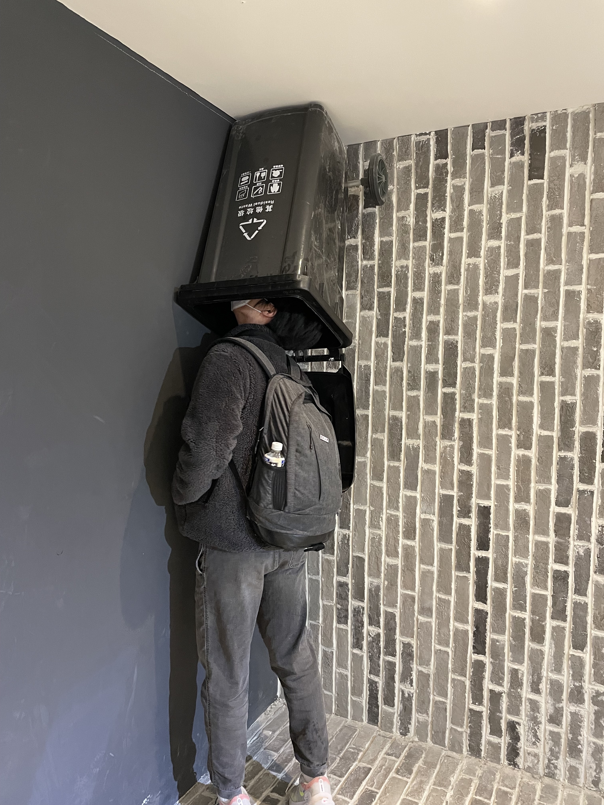
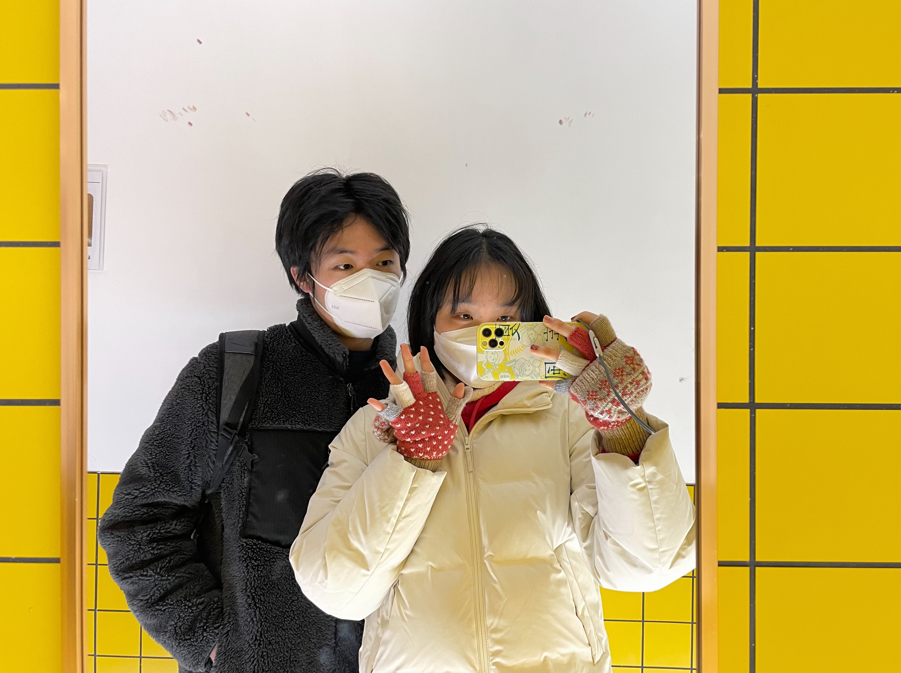
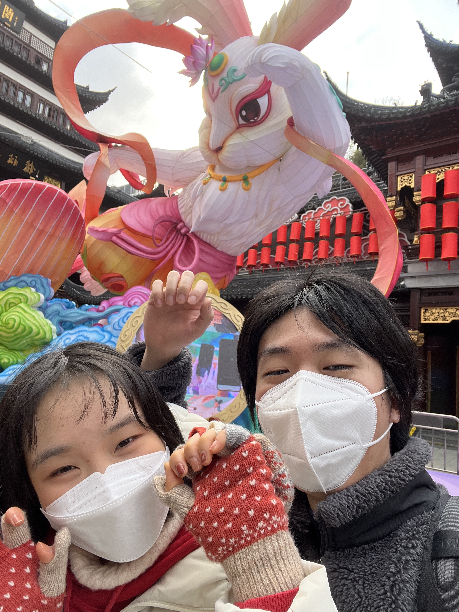
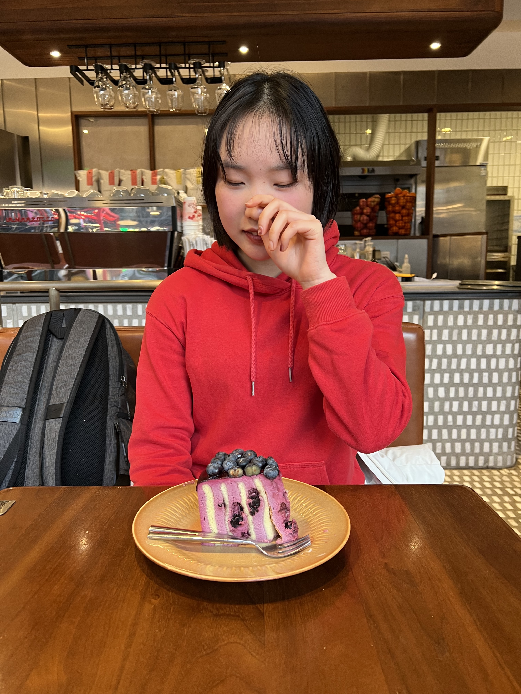
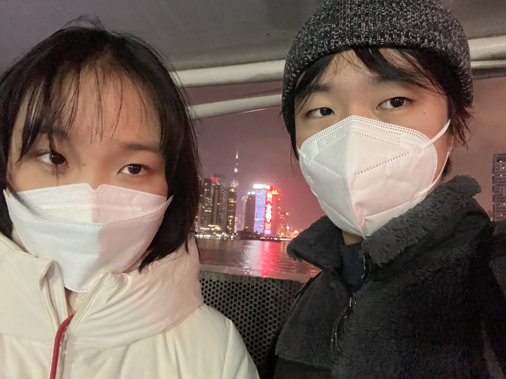

23-01-20
很难描述我在小区里遇到带着花花和容量瓶的小王时的惊喜，更好的是，我还得到了一个期盼已久的拥抱。
容量瓶，它对我真的很重要，我把它放在书桌上。我执着于承诺的兑现，原因显而易见，因为小王答应过要和我结婚。此外，我们还会有车车，会有奶牛猫，会有烤箱和蛋糕……我每一次提到这些事时都是最郑重的，不知道小王又在想些什么呢？我相信容量瓶会给我一些信心！
我还拥有了一束我的花花，那个瞬间，我一下确认了眼前的那个人是我的小王。他没有变，这让放下了萦绕许久的担心。不得不承认，我始终害怕还会有某个图穷匕见的时刻，要我不得不直面Y染色体的可怕之处。但是花花是实体，是存在者，是时间连续性的证明。花花是神圣的，具有驱魔的功效，它会让我们一直好好地在一起。
然后我牵着小王的手，我们一起去了豫园。小王的手粉粉的烫烫的，这是ChatWang的特别功能，只有我可以享用的，嘿嘿。
豫园是一个神奇的地方，总觉得自己去过，但又怀疑是在梦里去过。我们假装外地小情侣，什么也不思考、只在乎彼此的那种。我非常期盼着和小王一起旅行，原因同样无他，是因为他答应过我了，这对我真的很重要。新的一年，希望小王愿意多多和我玩，如果还可以和我去旅行，那就太好啦。我们在豫园的拥挤人群里扫描AR，看巨大的鱼从天上游过，没有比小王更适合共享这种风景的人了！我第一次和此后的每一次在迪士尼看到巴黎的夜景的时候就是这么想的。
小王还请我吃了蛋糕，蓝莓乳酪慕斯蛋糕，上头。蓝莓是蓝蓝的，铺满在表面，乳酪是酸酸的，慕斯口感凉凉的又很细腻。糖分进入我的血液里，召唤出应对的激素，把我体内对小王的喜欢喂饱了，事情开始变得危险。
后来我们一起到了江边，看天色一点点变黑，此时我已经完全沉迷其中，开始怀疑自己身处于另一个世界。那种感觉很熟悉，就像是每一次和小王认真约会时一样，也像是那天一样——我们在渡轮上拍下那张合照的那天。
然后我们不知怎么地就漂浮到了点都德，不知怎么地就得到了三个桃胶水牛奶蛋挞。小王查到蛋挞是英国人发明的，我觉得他特别的可爱，比蛋挞还要可爱。我真的很喜欢他，比喜欢蛋挞还要喜欢得多。
在江边，我和小王和生巧克力在一起，我无法掩饰自己的兴奋。我想我需要的是那一点儿咖啡因加酒精，好让我做个梦。
这是我应得的，我看着小王，说，这是我应得的。生而为顺性别异性恋女性不意味着我注定完蛋了，或许如此，必须如此。会有人认真地看到我，会有人耐心地听我说的话，会有人爱我那些微小的、独一无二的规定性——就像是我一直想做的那样，就像是我只想要对小王做的那样。我做梦也想要和他成为彼此的第一名，想要我们眼里只有对方。
一切都很梦幻，直到小王开始向我索要照片。好吧，也许这也可以是梦幻的一部分，只是我暂时还没有发现，所以我不厌其烦地思考这件事，不厌其烦地试图追问原因。小王大多数时候总是很包容我的情绪，我对此十分感激。我和小王相册里那些人不一样吗？我不敢一再问了，这样确实是很烦人的，我相信是如此的就够了。
以上就是甜甜蛋挞日的典故。此后的人们为了纪念小王和小陈这特别的一天，逐渐形成了吃蛋挞和甜品的风俗。英国人发明蛋挞也从此成为了传说般的、可歌可泣的绝美爱情的象征。
小妹妹手腕真细哦
帅哥探头
甜蜜合照
和兔几合影
美女吃蛋糕
试图复刻19年在渡轮上的合影
评论区